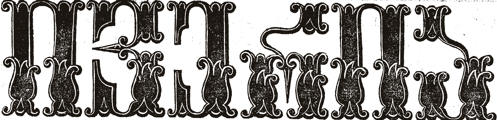
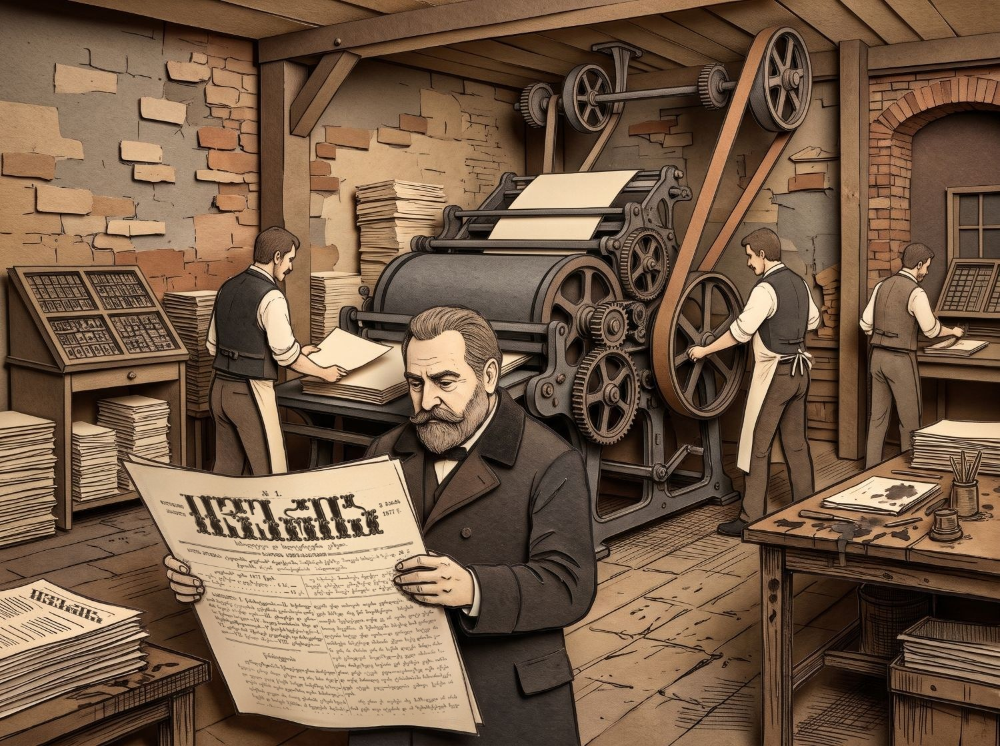

საპოლიტიკო და სალიტერატურო გაზეთი
ილია ჭავჭავაძის გაზეთის ნომრები ციფრულ არქივში. წაიკითხეთ გვერდ-გვერდ, გადაფურცლეთ და მოძებნეთ ნებისმიერი სიტყვა.


საპოლიტიკო და სალიტერატურო გაზეთი
ილია ჭავჭავაძის გაზეთის ნომრები ციფრულ არქივში. წაიკითხეთ გვერდ-გვერდ, გადაფურცლეთ და მოძებნეთ ნებისმიერი სიტყვა.
მოგესალმები გაზეთ „ივერიის“ ციფრულ არქივში!
წარმოიდგინე, რომ შეგიძლია დროში იმოგზაურო და ზუსტად იმ ფურცლებს გადაავლო თვალი, რომლებსაც საუკუნეზე მეტი ხნის წინ ჩვენი წინაპრები კითხულობდნენ. ეს პლატფორმა სწორედ ამისთვის შევქმენით — გვინდა, რომ წარსულის ეს ფასდაუდებელი საგანძური პირადად შენთვის იყოს ღია და ხელმისაწვდომი. არ აქვს მნიშვნელობა, მკვლევარი ხარ, სტუდენტი თუ უბრალოდ შენი ქვეყნის ისტორიით დაინტერესებული ადამიანი, აქ შენ შეძლებ პირველწყაროებიდან შეიგრძნო XIX-XX საუკუნეების მიჯნის საქართველოს სულისკვეთება.
ალბათ, გაგიგონია, რომ „ივერია“ 1877 წელს თავად ილია ჭავჭავაძის თაოსნობით დაარსდა. ის ჯერ ყოველკვირეულ გაზეთად, მერე ჟურნალად, ბოლოს კი (1886 წლიდან) ყოველდღიურ გაზეთად გამოიცემოდა და 1906 წლამდე იარსება.
თუმცა, „ივერია“ ბევრად მეტი იყო, ვიდრე უბრალოდ ახალი ამბების წყარო. წარმოიდგინე სივრცე, სადაც ილია ჭავჭავაძე, აკაკი წერეთელი, ვაჟა-ფშაველა და იაკობ გოგებაშვილი თავიანთ ახალ, უკვდავ ნაწარმოებებს აქვეყნებდნენ. ეს იყო ადგილი, სადაც იღვიძებდა ეროვნული ცნობიერება, ყალიბდებოდა საზოგადოებრივი აზრი და, ფაქტობრივად, იწერებოდა ჩვენი ისტორია. რუსეთის იმპერიის პირობებში ის იყო ხალხის მთავარი ხმა, იმდროინდელი საქართველოს კულტურული და ინტელექტუალური გული.
ახლა კი, ეს ისტორია პირდაპირ შენს ეკრანზეა. გეპატიჟები, თავად გადაფურცლო ეს ციფრული არქივი და საკუთარი თვალით წაიკითხო ტექსტები, რომლებმაც ჩვენი ერი შექმნა. გაეცანი წარსულს, რათა უკეთ დაინახო მომავალი.
სამეცნიერო ცნობათა გადმოტანა და გავრცელება საზოგადოებაში, ჩვენისა და უცხო ხალხთა ცხოვრების დაკვირვება და განმარტება,—აი რაში მდგომარეობს ჩვენის გაზეთის პროგრამმა.
Дозволено цензурою. Тифлисъ, 1 Марта 1877 г.
ასოთამწყობი ტყვიის ასოებს თითო-თითოდ იღებდა კასიდან და სარკისებურად აწყობდა. აკრიფეთ სიტყვა და მოძებნეთ მთელ არქივში.
სცადეთ: